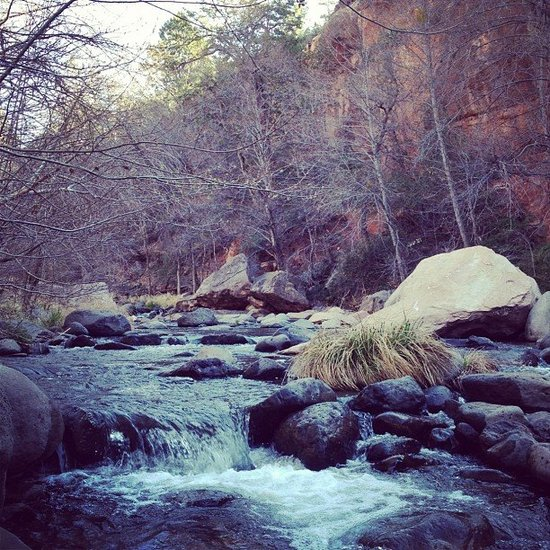
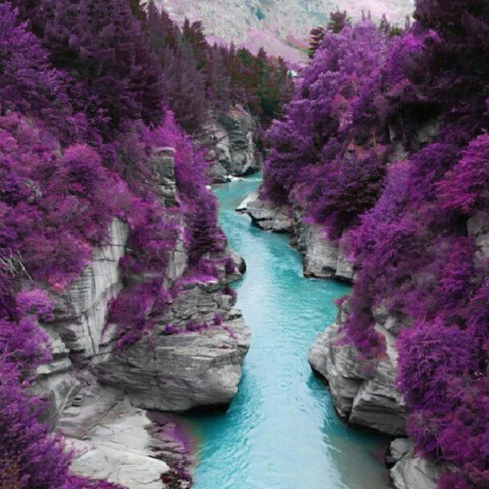
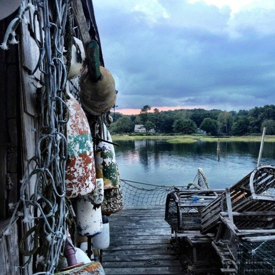

Hiking to Preikestolen ("The Pulpit Rock")
The hike to the plateau will take about two hours. Your starting point will be the area around the mountain lodge Preikestolen Fjellstue, which offers accommodation and meals to the weary traveller. This area also has public toilets, ample parking, a kiosk, and other facilities available.
In recent years a team of skilled stonemasons and sherpas from Nepal have done an impressive job of improving the path to Preikestolen. Steps have been built in the roughest areas, and a rocky trail has been made to keep the impact on the environment localized and to a minimum. As a result, the hike can be undertaken by most people with no significant disabilities.
From Preikestolen Fjellstue the hike is 2.6 miles each way, with a difference in altitude of 1,082 feet.
Wear good shoes or hiking boots, as the trail may be wet and muddy in places.
Hiking to Preikestolen is free of charge. In fact, in the Norwegian countryside you can pretty much go where you please - but please be careful and considerate.



The best time is from April to October. The hike is not recommended in the winter, due to few hours of daylight and icy conditions.
Start early in the day and make sure you have enough daylight to get back down before darkness falls. The path will be difficult to navigate in darkness, so bring a small torch, just in case.
It pays to check the local weather reports before you set out. If the cloud cover is low, the view from the top will be limited.
See a 360-degree view of the Pulpit Rock (Preikestolen) and how actor David Spinx liked the hike to Preikestolen.